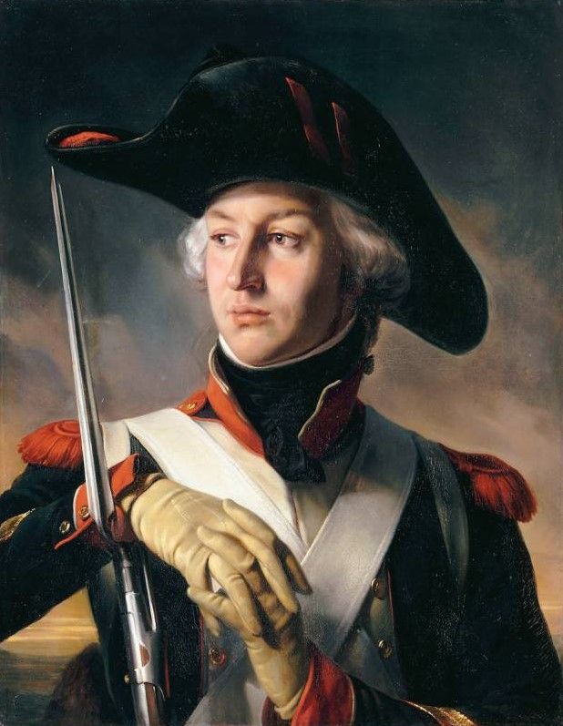
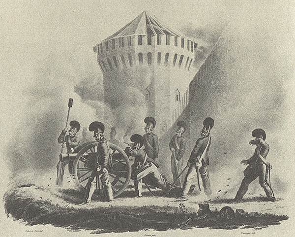
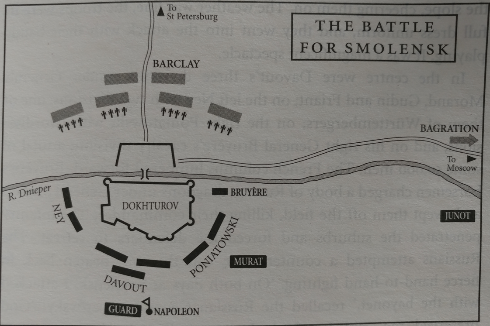
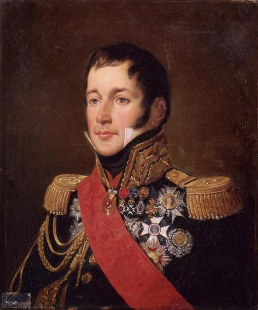

맨손과 성벽 - 스몰렌스크 전투 (4)
게시: 2020-04-13T06:30:23+09:00
나폴레옹이 눈 앞의 스몰렌스크에 집착하지 않고 다른 도하 지점을 찾기 위해 드네프르 강 상류로 병력을 파견한 것은 매우 정확한 판단이었습니다. 다만 그 지휘관으로 쥐노(Jean-Andoche Junot)를 선정했다는 것이 일단 좋지 않았습니다. 쥐노는 무명이던 나폴레옹의 출세 계기가 되었던 1793년 툴롱 포위 작전에서 만난 첫 부하이자 친구로서, 누구보다도 오래 나폴레옹의 측근으로 있던 사람이었습니다. 아주 오랜 기간 함께 동고동락했던 쥐노에게 주요 보직을 맡기지 않았다는 것은 한마디로 쥐노에게 뛰어난 재능이 없었다는 것을 뜻합니다. 일설에 따르면 그는 나폴레옹의 제1차 이탈리아 침공 작전 때, 로나토(Lonato) 전투에서 머리에 심한 부상을 입었는데, 그때 이후로 성격이 변하여 성급하고 자제력이 떨어지는 불안정한 사람이 되었다고 합니다. 실제로 그의 말년은 정신 착란 이후 자살로 이어지는 불행한 것이었지요. 그의 별명이 폭풍우, 즉 Junot la Tempête (영어로 Tempest)라고 알려진 것도 그의 폭풍우같은 작전 때문이 아니라 예측이 불가능할 정도로 불안정한 그의 성질머리 때문이었습니다. 그런 무능력한 인물을 계속 측근에 두고 있었다는 것은 나폴레옹의 매력 중 하나이기도 하지만 분명히 그의 인간적 약점이었습니다. 게다가 이렇게 중요한 작전에 이렇게 불안정한 인물을 선발했다는 것은 능력 위주의 선발이라는 그의 강점이 무너지는 모습을 상징적으로 보여주는 것이기도 했습니다. 이렇게 보낸 쥐노는 결국 엄청난 사고를 치고 맙니다.

(쥐노입니다. 1792년 당시 소속 그대로, 꼬트 도르(Côte d'Or, 황금해안이라는 뜻) 제2 대대 척탄병 부사관 군복 차림입니다.) 나폴레옹의 더 큰 실수는 이제 보시겠습니다만, 결국 쥐노의 연락을 기다리지 않고 스몰렌스크를 정면으로 공격했다는 것입니다. 이는 어느 누구를 탓할 것도 없이 본인의 성급함과 과욕에 의한 판단 착오였습니다. 다른 도하 지점을 찾기 위해 쥐노를 보냈으니, 그가 해야 할 것은 쥐노로부터 소식이 올 때까지 눈 앞의 스몰렌스크 수비대와 대치하며 강 건너 바클레이의 야전군을 붙잡아 두는 것이었습니다. 그러다 도하 지점을 찾았다는 소식이 오면 야밤에 몰래 일부 부대를 이동시켜 그 지점에서 도하, 러시아군의 측후면을 기습하는 것이었습니다. 물론 이는 추가적인 시간과 함께, 일단 라사스나(Rassasna)를 통한 도하가 쓸데없는 우회 작전이었다는 점을 인정하는 대범함이 필요한 일이었습니다. 그러나 대프랑스 제국의 황제로서 누구의 눈치도 볼 필요가 없었던 나폴레옹이었건만, 그에게는 그런 인내심과 대범함이 없었나 봅니다. 그는 정작 쥐노를 보내놓고 기다리다보니, 자꾸 다른 생각을 하게 되었습니다. 스몰렌스크에는 러시아인들이 신성시하는 성모 마리아의 성상(Odigitriya, Hodegetria)도 있고 하니, 싸움을 걸면 그를 지키기 위해서라도 좁은 스몰렌스크 밖으로 몰려나와 대결전을 벌일 거라는 상상이었습니다. 이건 꼭 잘못된 생각은 아니었습니다. 스몰렌스크는 국경 도시라서 비록 성벽은 튼튼했지만 워낙 작은 도시인데다 건물들 대부분이 목조 건물이라서 박격포로 폭발탄을 쏘아넣으면 온 도시가 삽시간에 화재로 휩싸일 것이 뻔했습니다. 따라서 성상이 보존된 성모 승천 성당을 지키려면 반드시 스몰렌스크 성벽 밖으로 나와서 보병 대오끼리 회전을 벌여 프랑스군의 포병 진지들을 밀어내야 했습니다. 하지만 이는 러시아군이 그 성상과 성당을 지켜야만 한다는 각오가 충만할 때의 이야기였는데, 러시아군 총지휘관은 냉철한 독일인 바클레이였습니다.

(스몰렌스크 전투에서 러시아군을 공격하는 프랑스 포병대입니다.)
다음날인 8월 17일 아침 프랑스군은 스몰렌스크 성벽 밖 외곽 지역의 민가들을 공격하여 거기를 지키고 있던 러시아 초계부대를 밀어냈습니다. 그러나 이들은 스몰렌스크에서 출격한 러시아군에 의해 곧장 다시 밀려났습니다. 나폴레옹은 러시아군이 성문을 열고 몰려나오는 것을 보고 크게 기뻐했습니다. 그는 러시아군이 자신의 생각대로 스몰렌스크를 사수하려는 의지가 강력하다고 판단했던 것입니다. 그러나 러시아군은 이미 점거하고 있던 외곽 지역의 건물들 이상으로는 기어나오지 않았습니다. 결국 나폴레옹은 러시아군의 주력을 스몰렌스크 앞으로 끌어 내기 위해서는 먼저 러시아군의 포대들을 잠재워야 한다고 보았습니다. 그렇게 하면 포병대를 전진시켜 스몰렌스크 시내에 포격을 가할 수 있고, 상황이 그렇게 되면 어쩔 수 없이 러시아군은 밖으로 기어나와 프랑스군 포병대를 저지하려고 할 것이라고 판단했던 것입니다. 그래서 나폴레옹은 이날 오전의 전투에서는 보병을 적극 투입하지 않고 주로 포병들을 투입하여 스몰렌스크의 방어탑과 성벽 위의 러시아군 포대들에 대해 대포병 사격전에 주력했습니다. 오후 2시쯤이 되어 스몰렌스크 성벽 위의 러시아군 포대 상당수가 침묵하게 된 이후에도 러시아군은 기어나오지 않았습니다. 나폴레옹은 이제 외곽 지대에 보병들을 투입했습니다. 그러나 러시아군은 퇴각하여 성문 안으로 후퇴할 뿐, 밖으로 나오지 않았습니다. 러시아군이 나오지 않자 나폴레옹은 당황했습니다. 그는 에라 모르겠다는 심정으로 총공격을 명령했습니다. 2백 문의 프랑스군 대포가 불을 뿜는 가운데, 네의 군단이 좌익, 포니아토프스키가 우익을, 그리고 다부가 중앙을 맡아 총 3개 군단 5만의 병력이 좁은 스몰렌스크 성벽으로 전진했습니다. 그 모습은 정말 대단한 장관이었습니다. 드네프르 강변에 위치한 스몰렌스크는 강가로 내려가는 경사면에 위치해 있었습니다. 그래서 강 우안의 프랑스군 후방에서는 스몰렌스크를 어느 정도 내려다볼 수 있었습니다. 그리고 강 좌안에 자리잡은 러시아군 포대에서도 강가의 경사면을 내려오며 스몰렌스크를 압박하는 그랑다르메의 대군이 훤히 내려다 보였습니다. 날씨는 청명했고 빽빽한 대오를 갖춘 채 전진하는 그랑다르메 병사들은 화려한 색상의 정복을 챙겨입은 상태였습니다.

(1812 Napoleon's Fatal March on Moscow by Adam Zamoyski에 게재된 전투 상황도입니다. 제가 요즘 쓰는 블로그의 내용은 모두 이 책을 기본 줄거리로 하고 있습니다.)
양측의 포병대는 서로를 향해 무지비한 포격을 퍼부어댔습니다. 그런 상황에서 공격하는 그랑다르메 병사들에게 가장 안전한 곳은 다름 아닌 스몰렌스크 성벽 바로 아래 부분이었습니다. 그래서인지 프랑스군은 정말 서둘러 앞으로 진격하려 했고 곧 성벽 아래는 몰려든 병사들로 빽빽하게 들어찼습니다. 그런데 이 공격은 다분히 나폴레옹이 즉흥적으로 결정한 것이다보니, 이들은 정작 성벽을 기어오를 사다리를 갖추고 있지 않았습니다. 이들은 성벽 앞의 해자까지 기어내려갔으나, 거기서는 더 이상 어찌해야 할지를 몰랐습니다. 이들이 할 수 있는 일은 스몰렌스크의 육중한 성벽의 벽돌 틈을 맨손으로 붙잡고 기어오르려 하는 것 뿐이었습니다. 해자 속에서 그랑다르메 병사들이 개미떼처럼 뒤엉켜 아우성치고 있는 가운데, 병사들 머리 위 성벽에서는 러시아군 대포들이 저 멀리 뒤쪽에 있는 프랑스군 대오를 향해 맹렬히 불을 뿜었습니다. 이때 즈음 해서는 프랑스군의 포격은 강건너 러시아군 포대와 스몰렌스크 시내 건물을 향하고 있었지만, 가끔씩 성벽을 때리는 프랑스군의 포격은 병사들의 머리 위에 벽돌조각과 흙먼지를 끼얹었습니다. 그야말로 아비규환이었습니다. 포니아토프스키 휘하의 폴란드 병사들은 동료의 어깨 위에 발을 딛고 성벽을 기어오르려 노력했지만 제대로 되지 않았습니다.

(아르망 기미노(Armand Charles Guilleminot) 장군입니다. 그는 프랑스 혁명 발발과 함께 군에 지원했는데, 처음에는 두무리에 장군 밑에서 복무했습니다. 두무리에 장군이 오스트리아로 망명하면서 그도 체포되었다가 풀려났는데, 이번에는 나폴레옹의 적이라고 할 수 있는 피슈그뤼 및 모로 장군 밑에서 일했습니다. 정말 인복이 없었던 사람이었지요. 덕분에 그는 한동안 보직도 없이 찬밥 신세였는데, 원래 교육을 그쪽으로 받은 사람이었는지 1805년 울름(Ulm) 작전 때부터 지도 제작자로 나폴레옹에게 재기용되었고, 이후 승진을 계속 했습니다. 백일천하 때에 나폴레옹 편에 섰음에도, 역시 그의 지도 제작 실력은 쓸모가 있었는지 1817년 그에게는 프랑스 국경선 확립 임무가 주어지며 재기용되었고, 이후에도 이런저런 관직에 등용되며 귀족으로 봉작되어 부르봉 왕가는 물론 루이-필립 왕 밑에서도 활발히 활동했습니다. 여러분, 기술을 배우셔야 합니다.) 이때 후방에서는 부교 공병대 지휘관인 에블레(Jean Baptiste Eblé) 장군이 이 광경을 보며 옆에 서있던 지도 제작자인 기미노(Armand Charles Guilleminot) 장군에게 대체 왜 나폴레옹이 아무 준비도 없이 스몰렌스크 성벽으로의 돌격을 감행하는지 이렇게 한탄하고 있었습니다. "폐하께서는 언제나 뿔을 붙잡고 황소를 잡으려 하시는군. 그냥 폴란드군을 몇 마일 상류 쪽으로 보내서 강을 건너게 하면 쉬울텐데 !" 이러는 와중에 날이 점점 어두워졌습니다.
Source : 1812 Napoleon's Fatal March on Moscow by Adam Zamoyski https://en.wikipedia.org/wiki/Battle_of_Smolensk_(1812) https://en.wikipedia.org/wiki/Armand_Charles_Guilleminot